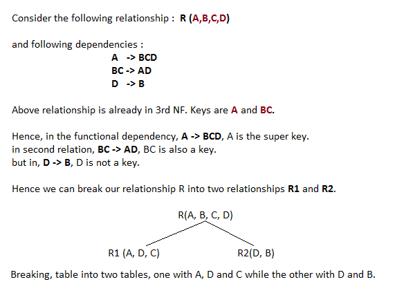

Database Normalisation is a technique of organizing the data in the database. Normalization is a systematic approach of decomposing tables to eliminate data redundancy and undesirable characteristics like Insertion, Update and Deletion Anamolies. It is a multi-step process that puts data into tabular form by removing duplicated data from the relation tables.
Normalization is used for mainly two purpose,
Without Normalization, it becomes difficult to handle and update the database, without facing data loss. Insertion, Updation and Deletion Anamolies are very frequent if Database is not Normalized. To understand these anomalies let us take an example of Student table.
| S_id | S_Name | S_Address | Subject_opted |
|---|---|---|---|
| 401 | Adam | Noida | Bio |
| 402 | Alex | Panipat | Maths |
| 403 | Stuart | Jammu | Maths |
| 404 | Adam | Noida | Physics |
Normalization rule are divided into following normal form.
As per First Normal Form, no two Rows of data must contain repeating group of information i.e each set of column must have a unique value, such that multiple columns cannot be used to fetch the same row. Each table should be organized into rows, and each row should have a primary key that distinguishes it as unique.
The Primary key is usually a single column, but sometimes more than one column can be combined to create a single primary key. For example consider a table which is not in First normal form
Student Table :
| Student | Age | Subject |
|---|---|---|
| Adam | 15 | Biology, Maths |
| Alex | 14 | Maths |
| Stuart | 17 | Maths |
In First Normal Form, any row must not have a column in which more than one value is saved, like separated with commas. Rather than that, we must separate such data into multiple rows.
Student Table following 1NF will be :
| Student | Age | Subject |
|---|---|---|
| Adam | 15 | Biology |
| Adam | 15 | Maths |
| Alex | 14 | Maths |
| Stuart | 17 | Maths |
Using the First Normal Form, data redundancy increases, as there will be many columns with same data in multiple rows but each row as a whole will be unique.
As per the Second Normal Form there must not be any partial dependency of any column on primary key. It means that for a table that has concatenated primary key, each column in the table that is not part of the primary key must depend upon the entire concatenated key for its existence. If any column depends only on one part of the concatenated key, then the table fails Second normal form.
In example of First Normal Form there are two rows for Adam, to include multiple subjects that he has opted for. While this is searchable, and follows First normal form, it is an inefficient use of space. Also in the above Table in First Normal Form, while the candidate key is {Student, Subject}, Age of Student only depends on Student column, which is incorrect as per Second Normal Form. To achieve second normal form, it would be helpful to split out the subjects into an independent table, and match them up using the student names as foreign keys.
New Student Table following 2NF will be :
| Student | Age |
|---|---|
| Adam | 15 |
| Alex | 14 |
| Stuart | 17 |
In Student Table the candidate key will be Student column, because all other column i.e Age is dependent on it.
New Subject Table introduced for 2NF will be :
| Student | Subject |
|---|---|
| Adam | Biology |
| Adam | Maths |
| Alex | Maths |
| Stuart | Maths |
In Subject Table the candidate key will be {Student, Subject} column. Now, both the above tables qualifies for Second Normal Form and will never suffer from Update Anomalies. Although there are a few complex cases in which table in Second Normal Form suffers Update Anomalies, and to handle those scenarios Third Normal Form is there.
Third Normal form applies that every non-prime attribute of table must be dependent on primary key, or we can say that, there should not be the case that a non-prime attribute is determined by another non-prime attribute. So this transitive functional dependency should be removed from the table and also the table must be in Second Normal form. For example, consider a table with following fields.
Student_Detail Table :
| Student_id | Student_name | DOB | Street | city | State | Zip |
|---|
In this table Student_id is Primary key, but street, city and state depends upon Zip. The dependency between zip and other fields is called transitive dependency. Hence to apply 3NF, we need to move the street, city and state to new table, with Zip as primary key.
New Student_Detail Table :
| Student_id | Student_name | DOB | Zip |
|---|
Address Table :
| Zip | Street | city | state |
|---|
The advantage of removing transtive dependency is,
Boyce and Codd Normal Form is a higher version of the Third Normal form. This form deals with certain type of anamoly that is not handled by 3NF. A 3NF table which does not have multiple overlapping candidate keys is said to be in BCNF. For a table to be in BCNF, following conditions must be satisfied:
